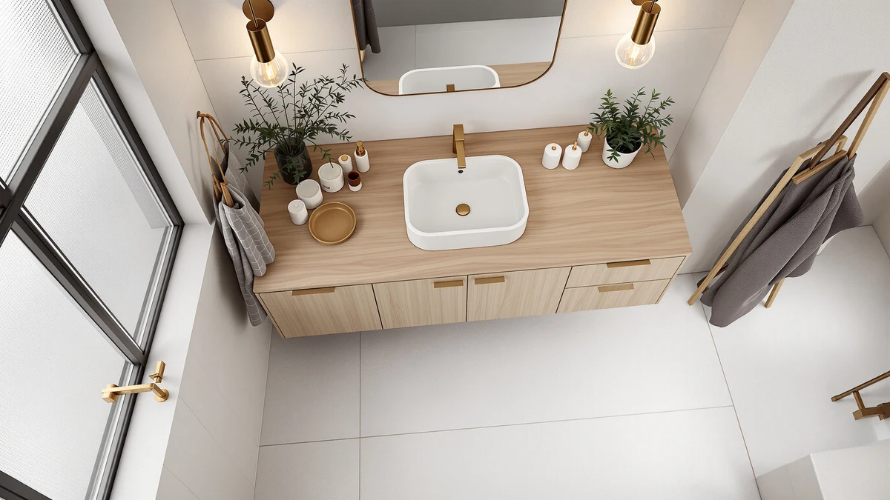

Nordee Axio 60'' Bathroom Review (2026): Worth It?
Prices and picks verified as of October 2026. Independent, reader-supported reviews.


Quick Answer
This review of the Nordee Axio 60'' bathroom vanity finds a $429.99 MDF and engineered wood cabinet sized for a primary bathroom that has outgrown a 36 or 48 inch vanity. It costs within six cents of the farmhouse-style and double-sink alternatives below, so the Axio's plainer cabinet front and clear size specs make it the safer default pick for a straightforward 60-inch upgrade.
Our pick: Nordee Axio 60'' Bathroom Vanity, $429.99 Check Price on Amazon
Bottom line: our top pick is the Nordee Axio 60'' Bathroom Vanity with Double Sink at $399.99.
Things to Know Before You Buy
- Price range: the four vanities in this nordee axio 60'' bathroom review all sit within six cents of each other, between $429.95 and $429.99.
- Material matters more than listing name at this price point. MDF and engineered wood construction, like the cabinet on the Nordee Axio, reacts to bathroom humidity differently than solid hardwood over several years.
- None of the four listings compared here has a public star rating or review count on Amazon yet, so early buyers are relying on stated materials rather than a track record.
- A 60-inch vanity usually fits a primary bathroom with room for a double sink or a single large basin with extra counter space on either side. Measure your wall width before you order, since 60 inches needs more clearance than a 36 or 48 inch cabinet.
- Every price below reflects the Amazon listing at the time of writing and can change, so check the current price before you buy.
This nordee axio 60'' bathroom review lines up the Nordee Axio 60'' Bathroom Vanity against three close-priced alternatives, so you can see exactly what $429 buys in a 60-inch vanity right now. Most shoppers land on this width when they need more counter and storage space than a 36 or 48 inch model offers, without jumping all the way up to a custom double-sink build. Vanities in this size and price range can look nearly identical in listing photos, and the real differences only show up once you compare materials, cabinet construction, and how much review history backs up each listing's claims.
The short version: the Nordee Axio 60'' Bathroom Vanity uses an MDF and engineered wood cabinet and costs $429.99, putting it right in line with the farmhouse-style and double-sink alternatives below rather than undercutting them on price. None of the four listings in this comparison has a public rating or review count yet, so you are weighing construction details and stated materials rather than years of owner feedback. We break down what that means for each option in the sections that follow, including where the Axio holds up and where it falls short, so you can match the trade-offs to your bathroom instead of guessing from a product photo.
Why You Should Trust Us
Ilane Tall covers bathroom fixtures and furniture for Best Bathroom Vanities and put together this nordee axio 60'' bathroom review by comparing manufacturer specs, current Amazon pricing, and whatever verified buyer feedback exists, rather than repeating marketing copy from the listing. We do not run a fake testing lab or claim to have installed every vanity we cover. Instead, we cross-check dimensions, materials, and pricing against what owners report after living with similar pieces, and we say so plainly when a listing does not have enough review data to back a confident recommendation. That distinction matters in the vanity category, since listing photos rarely show how a cabinet holds up after a year of daily splashes near the sink.
Our Research Experience
This nordee axio 60'' bathroom review does not involve physical testing. We compared the Nordee Axio 60'' Bathroom Vanity against its closest-priced competitors using the manufacturer's listed materials, dimensions, and construction details, then checked each listing for verified owner reviews. None of the four vanities covered here has collected enough reviews yet to support a public star rating, so we relied on the stated specifications and current pricing instead, and we flag that gap throughout this guide so you can weigh it accordingly. When a listing leaves out a detail, such as sink configuration or faucet hardware, we say so rather than filling the gap with a guess.
Overview & Specs

Nordee Axio 60'' Bathroom Vanity
What we like
- 60-inch width gives a primary bathroom significantly more counter and storage space than a 36 or 48 inch cabinet
- MDF and engineered wood cabinet keeps the price near $430, well under what a comparable solid-wood 60-inch vanity typically costs
- Straightforward listing with clear size and material specs, so there is little guesswork about what arrives at your door
Flaws but not dealbreakers
- MDF and engineered wood construction is more moisture-sensitive than solid hardwood over the long run
- No public rating or review count on Amazon yet, so early buyers are relying on the listing alone
- The listing does not specify sink configuration or faucet details, so confirm those with the seller before ordering
| Material | MDF / engineered wood |
| Size | 60'' |
The Nordee Axio 60'' Bathroom Vanity anchors this nordee axio 60'' bathroom review because it sits at the same price as its closest competitors while offering the straightforward width most primary bathrooms need. The cabinet uses an MDF and engineered wood build, which keeps the $429.99 price well under what a comparable 60-inch vanity in solid hardwood typically runs. For a bathroom that needs more counter and storage space than a 36 or 48 inch cabinet can offer, that width-to-price ratio is hard to beat, even though the listing stays light on extra details like sink configuration or faucet hardware.
Where the Axio falls short is track record. Amazon shows no rating or review count on this listing yet, so you are evaluating it on stated materials and dimensions rather than years of owner feedback. Engineered wood also means wiping up standing water around the sink promptly, since MDF cores swell faster than solid wood or plywood when moisture sits on the surface for hours. If you want a double-sink layout, confirm the sink configuration with the seller before ordering, since the listing does not spell that out, and weigh whether the farmhouse-style and double-sink alternatives below cover that gap better for your bathroom.
What We Liked
Across this nordee axio 60'' bathroom review, the Nordee Axio's biggest advantage is straightforward value: a 60-inch footprint at $429.99 undercuts what most comparable solid-wood vanities in this width cost, and the listing's size and material specs are clear enough that you know what you are ordering. The wider cabinet also means more counter space for two people getting ready at once, without the premium that typically comes with a true double-sink custom build. For a primary bathroom that has outgrown a 36 or 48 inch vanity, that combination of width and price is the main draw.
What Could Be Better
The biggest gap is review history. Because none of the four listings in this comparison has collected ratings yet, you cannot lean on dozens of owner comments the way you can with an established vanity brand, so part of the buying decision rests on trusting the stated materials. MDF construction, even when engineered and sealed, also asks for more care around standing water than solid wood, which matters in a bathroom that sees daily use. The listing is light on specifics like sink configuration and faucet compatibility, so shoppers who want that detail nailed down before ordering will need to reach out to the seller directly.
Who Is It For?
This 60-inch vanity fits a primary bathroom where you have outgrown a 36 or 48 inch cabinet and want more counter and storage space without paying custom-cabinet prices. It is a reasonable match for a remodel where MDF and engineered wood construction is an acceptable trade-off for a lower price. It is a weaker fit if you need a guaranteed double-sink layout spelled out in the listing, if your bathroom deals with heavy humidity and poor ventilation, or if you would rather buy a vanity with an established public review history first. Buyers who want every detail confirmed before ordering should also ask the seller about sink and faucet compatibility, since this nordee axio 60'' bathroom review listing does not spell those out.
Alternatives to Consider
If the Nordee Axio does not fit your bathroom or your plans, these three alternatives from this nordee axio 60'' bathroom review sit in the same price range and cover a farmhouse-style look and two double-sink options.

Editor's Pick
48" Farmhouse Bathroom Vanity with
A farmhouse-style alternative at essentially the same $429.99 price as the Axio, worth a look if you want a more rustic cabinet front for your primary bathroom instead of the Axio's plainer design. Like the Axio, this listing has no public rating yet, so weigh the style trade-off against that same lack of review history.
$429.99
Check Price on Amazon
Best Value
Double Bathroom Vanity with Sink
A double-sink vanity priced a few cents under the Axio, worth checking if your bathroom is shared by two people getting ready at the same time. Confirm the exact sink spacing against your plumbing rough-in before you order, since the listing does not detail it.
$429.95
Check Price on Amazon
Premium Choice
Double Bathroom Vanity with Sink
A second double-sink listing at the same $429.95 price as the option above, useful as a backup if that listing goes out of stock or its gallery photos suit your bathroom better. Treat it as a near-twin rather than a meaningfully different vanity, since both share the same price and dual-sink layout.
$429.95
Check Price on AmazonHow much does a 60-inch bathroom vanity cost?
Based on the four vanities in this nordee axio 60'' bathroom review, expect to pay right around $430 for an MDF or engineered wood vanity in this width.
Is MDF or engineered wood durable enough for a 60-inch vanity?
It can be, as long as you wipe up standing water around the sink promptly.
Frequently Asked Questions
How much does a 60-inch bathroom vanity cost?
Based on the four vanities in this nordee axio 60'' bathroom review, expect to pay right around $430 for an MDF or engineered wood vanity in this width. Solid hardwood 60-inch vanities with an established brand and review history typically start well above that, often $600 or more.
Is MDF or engineered wood durable enough for a 60-inch vanity?
It can be, as long as you wipe up standing water around the sink promptly. Engineered wood and MDF cores, like the one in the Nordee Axio, hold up fine under normal bathroom humidity but swell faster than solid wood or plywood if water sits on the surface for hours at a time. A vanity with a properly sealed top and good bathroom ventilation minimizes most of that risk.
Should I choose a single-sink or double-sink 60-inch vanity?
A single large basin works fine for one person who wants extra counter space. If two people share the bathroom every morning, a dual-sink layout like the double-sink alternatives in this review cuts down on the daily wait at the mirror, as long as you confirm the sink configuration with the seller before ordering.
Final Verdict
This nordee axio 60'' bathroom review comes down to what you value most: a straightforward price-to-width ratio or a different cabinet style at the same cost. The Nordee Axio 60'' Bathroom Vanity is the pick for most primary bathrooms that need 60 inches of counter and storage space, since its MDF and engineered wood cabinet holds that width at $429.99 without charging a premium. If you would rather have a farmhouse-style front or a guaranteed double-sink layout, the alternatives above sit in the same price range without straying far from what the Axio offers. Whichever option you choose, confirm the current price and stock before ordering, since Amazon listings in this category shift more often than the pages themselves get updated.